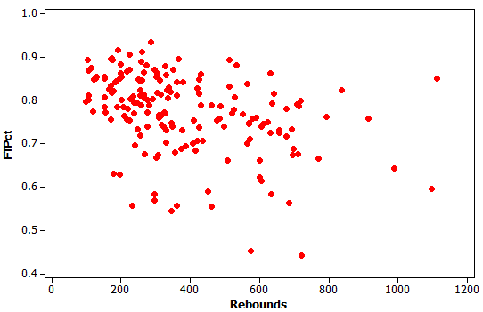

Comparing a quantitative variable across the groups of a categorical variable, and describing the relationship between two quantitative variables with scatterplots and correlation.
Two Kinds of Relationships
The tools depend on the types of the two variables involved.
Quantitative + Categorical
Does the quantitative variable differ across the groups?
Visualize: side-by-side boxplots, one per group.
Summarize: statistics by group (mean, median, SD, IQR).
Compare: the difference in means, \(\bar{x}_1 - \bar{x}_2\).
Quantitative + Quantitative
Do the two variables tend to move together?
Visualize: a scatterplot.
Describe: direction, form, and strength.
Summarize: the correlation, \(r\).
Side-by-Side Boxplots
One boxplot for each category, drawn on the same scale, makes group comparisons easy.
Reading One Boxplot
Center: the line inside the box is the median.
Spread: the box spans \(Q_1\) to \(Q_3\), so its width is the IQR.
Shape: compare whisker lengths for skewness.
Outliers: points plotted individually beyond the whiskers.
Comparing Groups
Compare centers, spreads, shapes, and outliers group by group.
A summary statistic for two groups is the difference in means.
\[
\bar{x}_1 - \bar{x}_2
\]
Say which group is first so the sign of the difference has meaning.
Example 1: Smokers by Region of the Country
The side-by-side boxplot shows the percent of adult residents who smoke in each state, categorized by region of the country (Midwest, Northeast, South, or West).
Questions
(a) In general, which region seems to have the highest percent of smokers?
(b) In which region is the state with the lowest percent of smokers?
(c) Which region has the least variability?
(d) Do any of the regions have any outliers? If so, which ones?
Quick Self-Quiz
Quantitative/Categorical Relationship
In a recent study, participants were randomized to drink either tea or coffee every day for two weeks. After two weeks, blood samples were exposed to an antigen and an immune system response was measured, with higher values representing a stronger immune system.
Questions
(a) Does there appear to be a relationship between the categorical variable (tea or coffee) and the quantitative variable (immune response)?
(b) Which group appears to have the stronger immune response?
(c) Are there outliers in either group? If so, which one(s)?
Quick Self-Quiz
Tea vs. Coffee: Descriptive Statistics
Descriptive statistics for the immune response (interferon gamma) in the two groups are shown.
Drink
\(n\)
Mean
StDev
Minimum
\(Q_1\)
Median
\(Q_3\)
Maximum
Coffee
10
17.70
16.69
0.00
2.25
15.50
25.25
52.00
Tea
11
34.82
21.08
5.00
13.00
47.00
55.00
58.00
(d) Difference in Means
Give notation for and find the difference in means.
(e) Causation
Can we conclude that tea causes an increase in this aspect of the immune response? Why or why not?
Scatterplots
A scatterplot shows the relationship between two quantitative variables.
How to Read One
Each point represents one case.
The explanatory variable is on the x-axis.
The response variable is on the y-axis.
Look for direction, form, and strength.
Direction of Association
Positive: both variables tend to increase together.
Negative: one tends to go up as the other goes down.
None: knowing one tells you nothing about the other.
Example 2: Positive or Negative Association?
In each case, do you expect a positive or negative association between the two quantitative variables?
(a)Number of years of education and annual salary, for US adults.
(b)Age and maximum running speed, for adults.
(c)Age and maximum running speed, for children.
(d)Age of the husband and age of the wife, for married couples.
Correlation Coefficient
A single number that measures the strength and direction of a linear relationship.
Notation
Sample correlation: \(r\)
Population correlation: \(\rho\) (rho)
\[
-1 \le r \le 1
\]
Properties
\(r > 0\): positive association
\(r < 0\): negative association
\(r \approx 0\): no linear association
Closer to \(\pm 1\) means a stronger linear relationship
Unitless, and the same regardless of which variable is X or Y
Interpreting Correlation
Rough guidelines for the strength of a linear relationship.
Strong
\(|r|\) close to 1. Points cluster tightly around a line.
Moderate
\(|r|\) around 0.5. A clear trend with noticeable scatter.
Weak
\(|r|\) close to 0. Little or no linear pattern.
Example 3: Scatterplots and Correlation
For each of the scatterplots, which of the following correlation values most closely approximates the correlation of the data shown?
−1−0.9−0.500.50.91
Scatterplot A
Scatterplot B
Quick Self-Quiz
Understanding Scatterplots
The scatterplot shows the relationship between number of rebounds in a season and free throw percentage for players in the National Basketball Association.

Each point is one NBA player for one season.
Questions
(a) What can we say about a player represented in the top left of the scatterplot? The bottom right?
(b) Does the direction of association appear to be more positive or negative?
(c) Explain what the direction of association (positive or negative) means in this context.
(d) Which value is the best guess at the correlation? −20, −2, −1, −0.9, −0.4, 0, 0.4, 0.9, 1, 2, 20
(e) Which of the values listed in part (d) are impossible values for a correlation?
(f) Are there any outliers in the scatterplot?
Correlation Cautions
Three important warnings when using correlation.
Outliers
Outliers can heavily influence \(r\). Always plot your data first.
Nonlinear
\(r = 0\) means no linear association. The variables could still be related in a curved pattern.
Not Causation
Correlation does not imply causation. A strong \(r\) does not mean one variable causes the other.
Example 4: Correlation and Outliers
Use technology to find the correlation of the following dataset with \(n = 6\) data values.
The Data
\(x\)
1
2
3
4
5
15
\(y\)
5
8
6
4
9
50
Your Tasks
(a) Find the correlation for all six data values.
(b) Now find the correlation for the same dataset, but with the outlier at (15, 50) removed, leaving \(n = 5\) points.
(c) Comment on the effect of the outlier on the correlation.
Example 5: TV and Life Expectancy
For a sample of 22 countries, we have values for the average life expectancy (in years) and the prevalence of television sets (number of TVs per 1000 people). The results are displayed in the scatterplot.
Correlation: \(r = 0.74\)
Questions
(a) Does there appear to be an association between the two variables? If so, is it positive or negative?
(b) Based on these results, comment on a proposal to send more TVs to countries with lower life expectancy to help people in those countries live longer.
What to Remember
Match the tool to the types of the two variables.
Quantitative + Categorical
Visualize with side-by-side boxplots.
Compare centers, spreads, shapes, and outliers by group.
Summarize with the difference in means, \(\bar{x}_1 - \bar{x}_2\).
Two Quantitative Variables
Visualize with a scatterplot: direction, form, strength.
Correlation \(r\) is between \(-1\) and \(1\) and measures linear association only.
Outliers can change \(r\) dramatically. Always plot first.